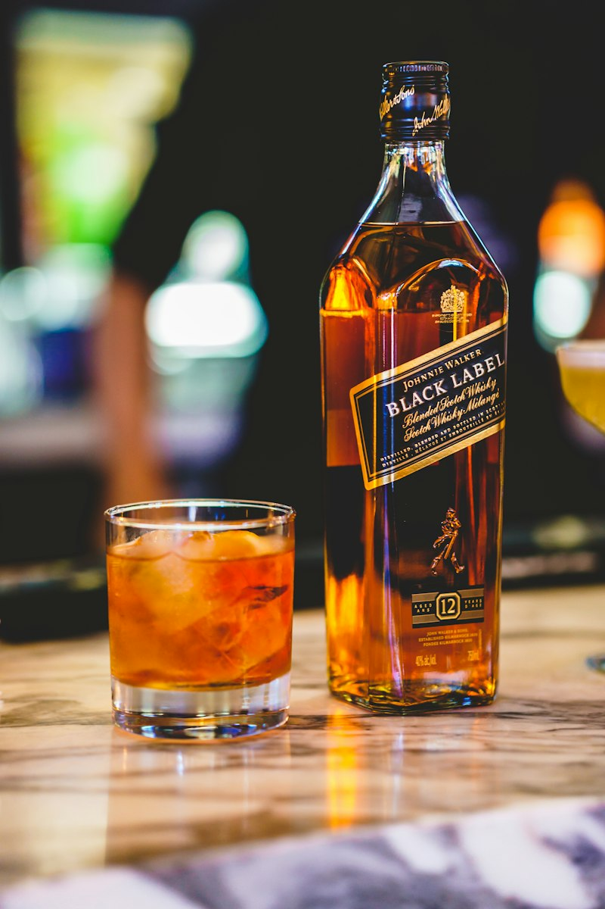

The undisputed king of the southern Islay coast. Sixteen patient years resting beside the turbulent Atlantic sea yields a deeply smoky, peat-laden nectar wrapped in sweet dried fruits, cured malt, and briny sea spray.
DistilleryLagavulin Distillery
RegionIslay, Scotland
ABV43% (86 Proof)
Cask MaturationRefill Oak & Sherry Butts

Lagavulin 16 Year Old poured neat in dramatic warm amber lighting
Sensory Analysis
Official Tasting Notes
Evaluated neat at room temperature with ten minutes of glass aeration.
Color
Appearance in the Glass
Deep Polished Mahogany & Antique Amber
Pours a rich, dark amber with glowing copper and burnished mahogany highlights. It displays noticeable oily viscosity, coating the Glencairn with heavy, disciplined legs that descend at a stately pace, hinting at its 16-year cask extraction.
Deep AmberMahogany GlintsHeavy Viscosity
Smell
Aromatic Bouquet
Commanding Peat Smoke, Lapsang Tea & Salt Air
Intensely aromatic and brooding. A billow of maritime peat smoke arrives first, intertwined with iodized coastal brine and smoked kippers. Beneath the campfire embers lie dark raisins, pipe tobacco, lapsang souchong black tea, and charred citrus rind.
Rich Dry Smoke, Black Pepper, Dried Fig & Endless Finish
Massive, palate-engulfing peat smoke is immediately counterbalanced by luscious malty sweetness and dark dates. The mid-palate introduces sea salt, cracked black pepper, and bitter cocoa. The finish is legendary—epic in length, remarkably dry, warming, and resonant with embers.
Nestled in a picturesque rocky bay overlooked by the ruins of Dunyvaig Castle, Lagavulin has operated legally since 1816. The distillery is famous for having the slowest distillation rate of any malt whisky distillery in Scotland—allowing more copper contact to strip away heavy sulfurs, leaving only the purest oily, smoky spirit.
While many Islay distilleries release their flagship expressions around 10 or 12 years of age to preserve raw, fiery peat aggressiveness, Lagavulin insists on 16 long years. That extra maturation mellows the smoke from sharp phenolic ash into an aristocratic, brooding tapestry of velvet smoke, sea mineral, and decadent dark fruit.
Tasting Room Verdict
"The gold standard by which all heavily peated whiskies are measured. Sophisticated, demanding, and utterly unforgettable on a stormy evening."